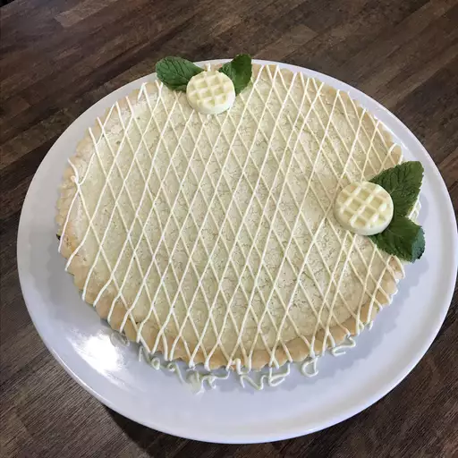
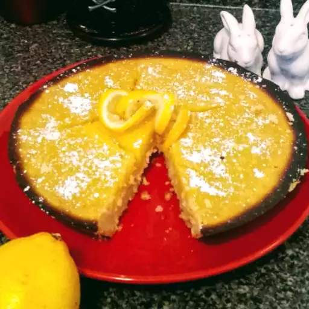

Lemon Tart

Description
Very lemony-flavored with a buttery shortbread crust; to die for! You can make smaller slices, and the tart can yield 16 servings. This dessert is very decadent, perfect for indulging after dinner or with a cup of hot tea.
Ingredients
Crust:
- ¾ cup butter, at room temperature
- ½ cup white sugar
- ½ teaspoon vanilla extract
- 1 pinch salt
- 1 ¾ cups all-purpose flour
Filling:
- 1 ½ cups white sugar
- 3 large eggs
- 1 tablespoon lemon zest
- ½ cup freshly squeezed lemon juice
- ½ cup all-purpose flour
- 1 teaspoon confectioners' sugar, or to taste
Steps
- Combine butter, 1/2 cup sugar, vanilla extract, and salt in the mixing bowl of a stand mixer; mix ingredients thoroughly with a paddle attachment. Mix flour into butter mixture to make a smooth dough. Press dough into a 9-inch tart pan; refrigerate crust for 30 minutes.
- Preheat oven to 350 degrees F (175 degrees C).
- Bake crust until light golden brown, 15 to 20 minutes.
- Whisk sugar, eggs, lemon zest, lemon juice, and 1/2 cup flour in a bowl until smooth. Pour lemon filling into crust. Cover edges of crust with strips of aluminum foil to prevent burning.
- Bake tart until filling is set, about 20 minutes. Cool completely and dust with confectioners' sugar.
